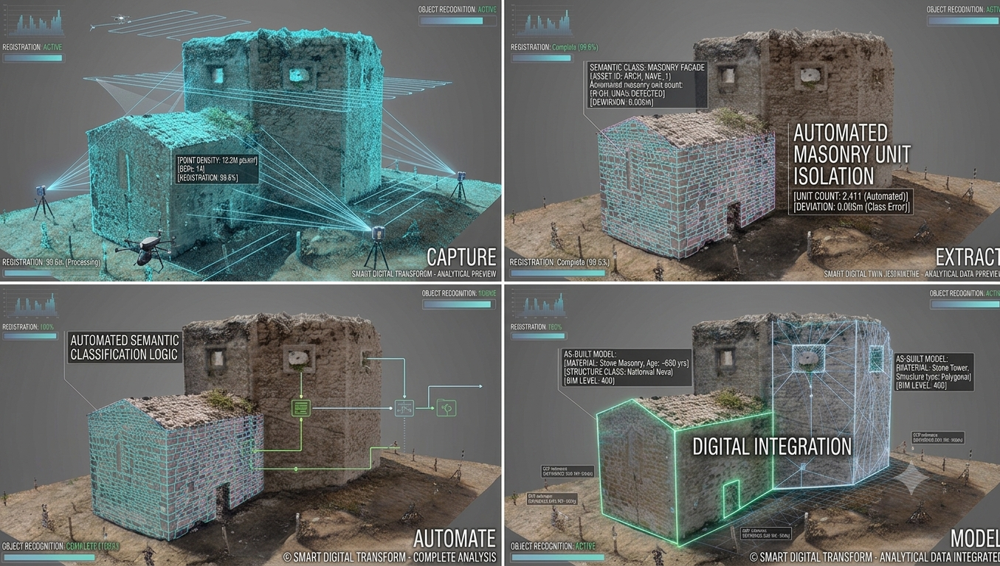
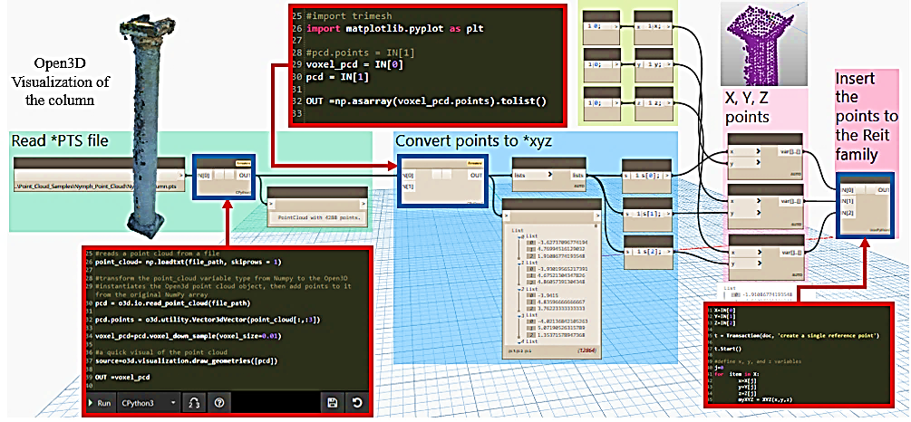

1
Time-consuming workflows
Scan-to-HBIM projects require significant time and effort to transform point cloud data into usable BIM geometry.
 BIMLash
BIMLash
DIGI+ MSCA Fellowship Programme
Revit Add-in for Scan-to-HBIM Pre-Modelling
Supervisor: Zohreh Pourzolfaghar
We believe that BIM modellers, BIM specialists, and HBIM practitioners struggle with converting point cloud data into modelling-ready geometry because existing Scan-to-HBIM workflows are time-consuming, highly manual, prone to inconsistencies, and often require multiple software platforms.
Scan-to-HBIM projects require significant time and effort to transform point cloud data into usable BIM geometry.
Modelling quality depends heavily on user expertise, often leading to simplifications, inconsistencies, and reduced geometric accuracy.
Multiple software tools, plugins, and workflows are commonly required to complete Scan-to-HBIM projects.
A step towards semantic heritage modelling.
BIMLash is a custom Revit add-in designed to address three major challenges in Scan-to-HBIM workflows: reducing workflow fragmentation, decreasing manual processing requirements, and improving modelling efficiency.
The tool generates mesh geometry directly from point cloud data within Revit, providing a more integrated and efficient workflow for heritage documentation.

BIMLash automates the transition from unorganised point clouds to structured mesh and solid geometry, reducing manual modelling hours and improving precision in heritage and industrial modelling projects.
Seamlessly handles dense point cloud data within the BIM environment.
Converts complex point clusters into optimised geometric surfaces.
Maps solid geometry directly onto spatial data to support as-built accuracy.
Native Revit API integration for workflow continuity.
Target platform: Autodesk Revit 2024–2027
Input: Native Revit point cloud views and PTS/E57
Output: Optimised mesh geometry / Revit parametric solids (generic models, massing)
These assumptions are derived from literature findings and project development experience and have not yet been validated through customer discovery interviews.
Customer segments and challenges are currently hypotheses and require validation through customer interviews.
Copyright protection.
Copyright protection.
Copyright protection.
Trademark consideration.

BIMLash has progressed from a research prototype to a technology with potential commercial value. The next stage focuses on customer validation, IP protection, and industry adoption.
Development of BIMLash through PhD study and the DIGI+ programme, with publication and presentation of research findings.
Introduction of BIMLash to industry stakeholders and initial discussions on applications and market relevance.
Business Model Canvas development and IP discussion with MaynoothWorks regarding protection and future industry engagement.
Customer discovery interviews, validation of customer needs and priorities, and pilot testing with potential users.
IP assessment and protection strategy, industry partnerships, and commercial deployment opportunities.
For technical documentation, deployment coordination, or feedback, please contact:
Sara Ben Lashihar
sara.benlashihar@mu.ie
+353 83 005 7491